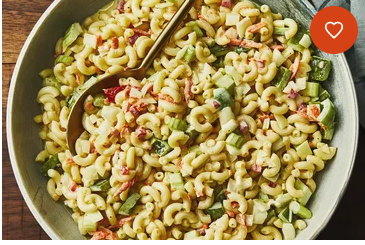

French beans

This is a plate of french beans
Ingredients
- tomatoes
- onions
- galic
- salt
- french
- cooking oil
- green grams
procedure for cooking
- Boil the green grams properly and french beans
- Wash the onions and tomatoes
- Carefully cut the onions in small pieces
- Cut the tomatoes also in small pieces
- Put the cooking pan on the source of heat and smear cooking oil on it
- Wait it to gain heat and place the pieces of onions on the cooking oil
- Allow them to cook until they are golden brown
- Now place the tomatoes and mix them properly
- Mix them with the fried the boiled green gramsand french beans
- Allow them to cook for ten minutes and serve it while hot